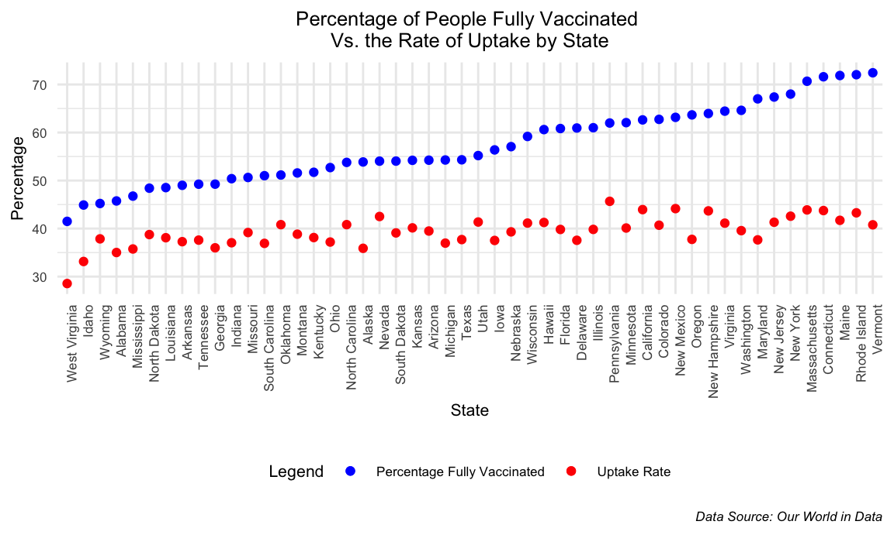
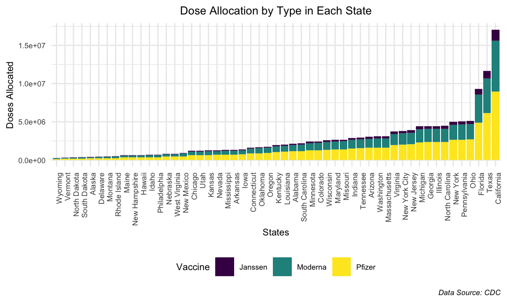
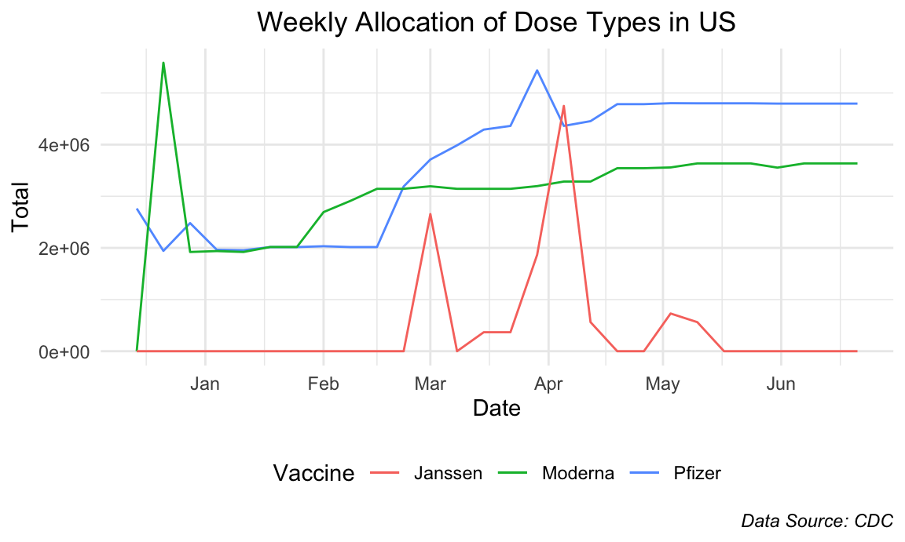

uptake_df =
read_csv(file = "./data/us_state_vaccinations.csv") %>%
filter(!(location %in% c("Virgin Islands", "Veterans Health","Republic of Palau", "Puerto Rico", "Northern Mariana Islands", "Marshall Islands", "Indian Health Svc", "Guam", "Federated States of Micronesia", "District of Columbia", "Dept of Defense", "Bureau of Prisons", "American Samoa", "United States"))) %>%
select(date, location, people_vaccinated, total_distributed) %>%
mutate(
rate_of_uptake = people_vaccinated / total_distributed,
location = recode(location, "New York State" = "New York"))
code_df = read_csv(file = "./data/csvData.csv") %>%
janitor::clean_names() %>%
rename(location = state) %>%
select(location, code)
uptake_code_df =
merge(uptake_df, code_df , by = "location") %>%
mutate(
date = as.factor(date),
rate_of_uptake = 100 * rate_of_uptake,
rate_of_uptake = round(rate_of_uptake, digits = 2),
hover = paste0(location, "\n", rate_of_uptake, "%")) %>%
rename(Uptake_Rate = rate_of_uptake)
fontstyle = list(
family = "DM Sans",
size = 15,
color = "black")
label = list(
bgcolor = "#EEEEEE",
bordercolor = "transparent",
font = fontstyle)
choropleth_map_uptake =
plot_geo(uptake_code_df,
locationmode = "USA-states",
frame = ~ date) %>%
add_trace(locations = ~ code,
z = ~ Uptake_Rate,
color = ~ Uptake_Rate,
text = ~ hover,
hoverinfo = "text") %>%
style(hoverlabel = label) %>%
layout(geo = list(scope = "usa"),
title = "Vaccine Uptake Rate in the US") %>%
colorbar(ticksuffix = "%")
choropleth_map_uptakeThe vaccine uptake rates don’t seem to vary much over time and usually hovered from 40% to 60% throughout the states, which is surprising as we expected to see a significant increase in uptake rates that paralleled the increase in vaccination rates from mid-March to July 2021. However, this may be a good thing as it may be an indicator that vaccine circulation was very efficient.
perc_vacc_df =
read_csv(file = "./data/us_state_vaccinations.csv") %>%
filter(!(location %in% c("Virgin Islands", "Veterans Health","Republic of Palau", "Puerto Rico", "Northern Mariana Islands", "Marshall Islands", "Indian Health Svc", "Guam", "Federated States of Micronesia", "District of Columbia", "Dept of Defense", "Bureau of Prisons", "American Samoa", "United States")),
date == "2021-11-20") %>%
mutate(
location = recode(location, "New York State" = "New York")) %>%
select(location, people_fully_vaccinated_per_hundred)
uptake_df_date =
uptake_df %>%
filter(date == "2021-11-20")
perc_vacc_uptake =
merge(perc_vacc_df, uptake_df_date, by = "location") %>%
mutate(
rate_of_uptake = 100 * rate_of_uptake,
location = fct_reorder(location, people_fully_vaccinated_per_hundred))
colors = c("Percentage Fully Vaccinated" = "blue", "Uptake Rate" = "red")
ggplot(perc_vacc_uptake, aes(x = location)) +
geom_point(aes(y = people_fully_vaccinated_per_hundred, color = "Percentage Fully Vaccinated")) +
geom_point(aes(y = rate_of_uptake, color = "Uptake Rate")) +
labs(
x = "State",
y = "Percentage",
title = "Percentage of People Fully Vaccinated \nVs. the Rate of Uptake by State",
caption = "Data Source: Our World in Data",
color = "Legend") +
theme(plot.title = element_text(hjust = 0.5),
plot.caption = element_text(face = "italic")) +
theme(text = element_text(size = 8),
axis.text.x = element_text(angle = 90, hjust = 1)) +
scale_color_manual(values = colors)
We see that although the vaccination rates varied significantly between states, the rate of vaccine uptake (the total number of people vaccinated divided by the total number of vaccines distributed) between states did not differ much at all, with the exception West Virginia and Idaho.
pfizer_df =
GET("https://data.cdc.gov/resource/saz5-9hgg.csv") %>%
content() %>%
janitor::clean_names() %>%
filter(!(jurisdiction %in% c("Virgin Islands", "Veterans Health","Republic of Palau", "Puerto Rico", "Northern Mariana Islands", "Marshall Islands", "Indian Health Svc", "Guam", "Federated States of Micronesia", "District of Columbia", "Dept of Defense", "Bureau of Prisons", "American Samoa", "United States", "Federal Entities", "Mariana Islands", "Micronesia", "Palau", "U.S. Virgin Islands"))) %>%
group_by(jurisdiction) %>%
summarize(sum_of_first = sum(x1st_dose_allocations)) %>%
rename(pfizer = sum_of_first)
moderna_df =
GET("https://data.cdc.gov/resource/b7pe-5nws.csv") %>%
content() %>%
janitor::clean_names() %>%
filter(!(jurisdiction %in% c("Virgin Islands", "Veterans Health","Republic of Palau", "Puerto Rico", "Northern Mariana Islands", "Marshall Islands", "Indian Health Svc", "Guam", "Federated States of Micronesia", "District of Columbia", "Dept of Defense", "Bureau of Prisons", "American Samoa", "United States", "Federal Entities", "Mariana Islands", "Micronesia", "Palau", "U.S. Virgin Islands"))) %>%
group_by(jurisdiction) %>%
summarize(sum_of_first = sum(x1st_dose_allocations)) %>%
rename(moderna = sum_of_first)
jj_df =
GET("https://data.cdc.gov/resource/w9zu-fywh.csv") %>%
content() %>%
janitor::clean_names() %>%
filter(!(jurisdiction %in% c("Virgin Islands", "Veterans Health","Republic of Palau", "Puerto Rico", "Northern Mariana Islands", "Marshall Islands", "Indian Health Svc", "Guam", "Federated States of Micronesia", "District of Columbia", "Dept of Defense", "Bureau of Prisons", "American Samoa", "United States", "Federal Entities", "Mariana Islands", "Micronesia", "Palau", "U.S. Virgin Islands"))) %>%
group_by(jurisdiction) %>%
summarize(sum_of_first = sum(x1st_dose_allocations)) %>%
rename(jj = sum_of_first)
pfizer_moderna_df =
merge(pfizer_df, moderna_df, by = "jurisdiction")
all_vacc_df =
merge(pfizer_moderna_df, jj_df, by = "jurisdiction") %>%
pivot_longer(
pfizer:jj,
names_to = "vaccine",
values_to = "doses_allocated")
all_vacc_df %>%
mutate(
jurisdiction = fct_reorder(jurisdiction, doses_allocated)
) %>%
ggplot(aes(x = jurisdiction, y = doses_allocated, fill = vaccine)) +
geom_col() +
labs(
x = "States",
y = "Doses Allocated",
title = "Dose Allocation by Type in Each State",
caption = "Data Source: CDC") +
theme(plot.title = element_text(hjust = 0.5),
plot.caption = element_text(face = "italic")) +
theme(text = element_text(size = 8),
axis.text.x = element_text(angle = 90, hjust = 1)) +
scale_fill_discrete(name = "Vaccine", labels = c("Janssen", "Moderna", "Pfizer"))
California received by far the highest number of doses with Texas and Florida following. On the opposite side, Wyoming and Vermont received the least number of doses among the states. However, according to the graph previous to this one, it showed that Vermont had the highest percentage of people vaccinated within the United States. This is telling as it shows that vaccine distribution is not indicative of vaccination rates and vice versa. Accordingly, the proportion of each vaccine type that a state received did not seem to vary widely between states. In other words, states seemed to receive equal dosages of Moderna as they did Pfizer with Janssen doses trailing far behind. More information about this is shown below.
pfizer_date_df =
GET("https://data.cdc.gov/resource/saz5-9hgg.csv",
query = list("$limit" = 10000)) %>%
content() %>%
janitor::clean_names() %>%
filter(!(jurisdiction %in% c("Virgin Islands", "Veterans Health","Republic of Palau", "Puerto Rico", "Northern Mariana Islands", "Marshall Islands", "Indian Health Svc", "Guam", "Federated States of Micronesia", "District of Columbia", "Dept of Defense", "Bureau of Prisons", "American Samoa", "United States", "Federal Entities", "Mariana Islands", "Micronesia", "Palau", "U.S. Virgin Islands"))) %>%
rename(date = week_of_allocations) %>%
mutate(date = as.factor(date),
date = as.Date((date))) %>%
select(date, "x1st_dose_allocations") %>%
group_by(date) %>%
summarize(pfizer = sum(x1st_dose_allocations))
moderna_date_df =
GET("https://data.cdc.gov/resource/b7pe-5nws.csv",
query = list("$limit" = 10000)) %>%
content() %>%
janitor::clean_names() %>%
filter(!(jurisdiction %in% c("Virgin Islands", "Veterans Health","Republic of Palau", "Puerto Rico", "Northern Mariana Islands", "Marshall Islands", "Indian Health Svc", "Guam", "Federated States of Micronesia", "District of Columbia", "Dept of Defense", "Bureau of Prisons", "American Samoa", "United States", "Federal Entities", "Mariana Islands", "Micronesia", "Palau", "U.S. Virgin Islands"))) %>%
rename(date = week_of_allocations) %>%
mutate(date = as.factor(date),
date = as.Date((date))) %>%
select(date, "x1st_dose_allocations") %>%
group_by(date) %>%
summarize(moderna = sum(x1st_dose_allocations))
janssen_date_df =
GET("https://data.cdc.gov/resource/w9zu-fywh.csv",
query = list("$limit" = 10000)) %>%
content() %>%
janitor::clean_names() %>%
filter(!(jurisdiction %in% c("Virgin Islands", "Veterans Health","Republic of Palau", "Puerto Rico", "Northern Mariana Islands", "Marshall Islands", "Indian Health Svc", "Guam", "Federated States of Micronesia", "District of Columbia", "Dept of Defense", "Bureau of Prisons", "American Samoa", "United States", "Federal Entities", "Mariana Islands", "Micronesia", "Palau", "U.S. Virgin Islands"))) %>%
rename(date = week_of_allocations) %>%
mutate(date = as.factor(date),
date = as.Date((date))) %>%
select(date, "x1st_dose_allocations") %>%
group_by(date) %>%
summarize(janssen = sum(x1st_dose_allocations))
pfizer_moderna_date =
merge(pfizer_date_df, moderna_date_df, by = "date", all = TRUE)
all_date =
merge(pfizer_moderna_date, janssen_date_df, by = "date", all = TRUE)
all_date[is.na(all_date)] = 0
colors = c("Pfizer" = "yellow", "Moderna" = "purple", "Janssen" = "blue")
all_date %>%
ggplot(aes(x = date)) +
geom_line(aes(y = pfizer, color = "Pfizer")) +
geom_line(aes(y = moderna, color = "Moderna")) +
geom_line(aes(y = janssen, color = "Janssen")) +
labs(
x = "Date",
y = "Total",
title = "Weekly Allocation of Dose Types in US",
caption = "Data Source: CDC") +
theme(plot.title = element_text(hjust = 0.5),
plot.caption = element_text(face = "italic")) +
scale_color_discrete(name = "Vaccine")
As depicted, the allocation of Janssen doses seems to occur in only 3 bursts: once in March, once in April, and once in May whereas the distribution of the other two seems to be constant or increasing over time. This can explain the distribution patterns seen in the graph previous.